A tiered tray is one of the easiest ways to pack a lot of holiday personality into a very small footprint.
It works on a kitchen island, a counter corner, or a coffee table, and it is small enough to style in an afternoon.
The best ones build around one clear idea, a hot cocoa bar, a gingerbread bakery, a snowman family, rather than piling on every Christmas object in the house.
Height and texture do most of the work after that.
A tall centerpiece like a mini tree or a mug on each tier, with low fillers like garland and loose ornaments around it, keeps any level from looking flat.
Here are 44 Christmas tiered tray ideas, from cocoa stations to gingerbread villages to trays with nothing on them but ornaments, to help you style the one sitting empty on your counter right now.

1. Turn the Kitchen Island into a Gingerbread Village
This is the tray most people picture when they think of a Christmas kitchen.
A dark wood three-tier stand with a black post holds a gingerbread house trimmed in gumdrops and candy canes on the bottom, a row of iced gingerbread men and two tiny rolling pins in the middle, and peppermints in a pink dish at the top.
Sugared cranberries and bottle brush trees fill in the gaps, and a wreath hangs in the window behind it.
Keep the house on the lowest, widest tier so it does not crowd the smaller cookies above it.
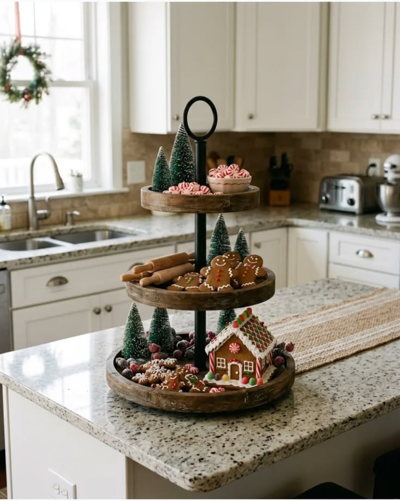
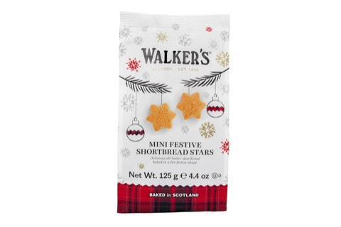
Walker's Mini Festive Shortbread Cookies, Star-Shaped Christmas Cookies, Pack of 6
Shop on Amazon2. Go Navy and White with a Snowman Family
Not every winter tray needs red in it.
A navy SNOW mug sits on the top tier of a white beaded stand here, beside a pair of ceramic snowmen in black plaid scarves and a few sprigs of cedar.
The bottom tier holds a hand-drawn snowman mug, a bowl of blue and white snowflake candies, and a snowman teapot reading Let It Snow, all on a ruffled burlap placemat.
Two tiny pinecones and more cedar fill the gaps on the lower tier.
One dark mug is enough to anchor the whole palette. Everything else can stay cream and black.
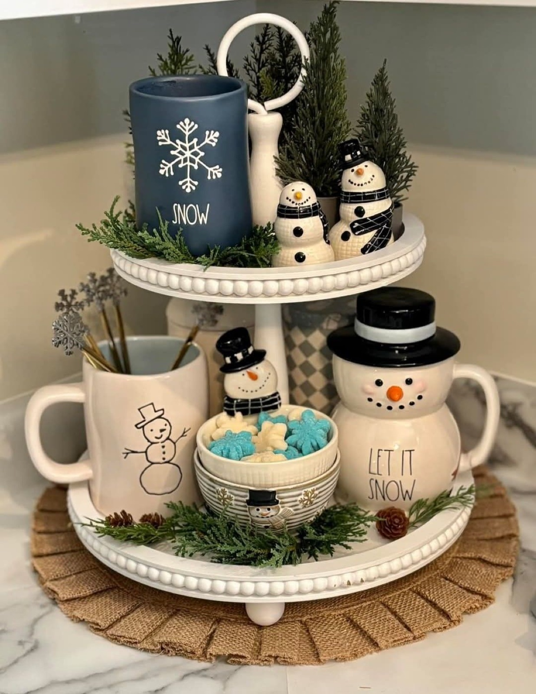
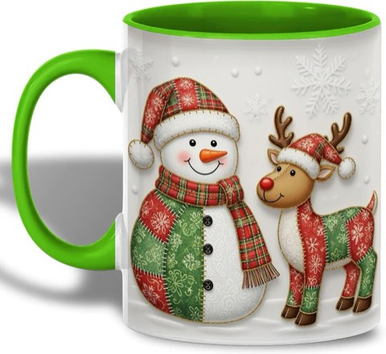
Snowman and Reindeer Christmas Mug, Red and Green Plaid Patchwork, 11 oz
Shop on Amazon3. Build a Black and White Reindeer Crossing Tray
A wood Reindeer Crossing sign tops this one, with a deer silhouette tag hanging from black beads beside it.
The middle tier holds a white Santa mug stuffed with cinnamon sticks, two matte black canisters, and a pair of carved wood trees, while a Believe sign and a mason jar of pinecones sit below.
Keep the greenery to a single sprig at the top. Too much green softens the graphic look this tray depends on.
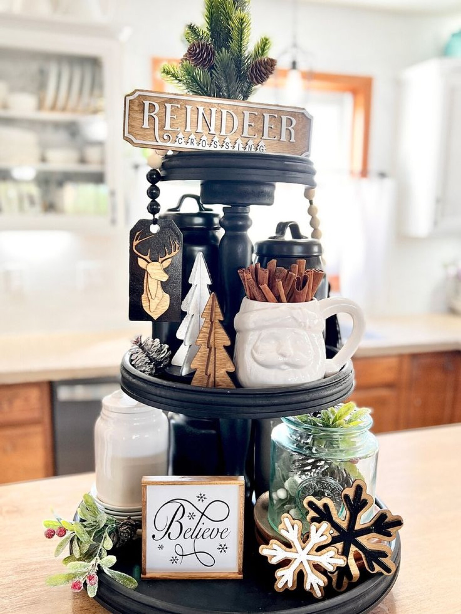
4. Fill a Red and White Tray with Carol Lyrics
Every sign on this tray is a line from a Christmas carol.
A red Hark the Herald Angels Sing tag leans against a gnome in a Nordic knit hat on the top tier, with a Joy to the World sign and a Deck the Halls block on the tier below.
A red and natural wood bead garland with jute tassels drapes across both levels of the chippy white stand.
Pick one song per sign rather than mixing lyrics with generic greetings. The theme reads clearly that way.
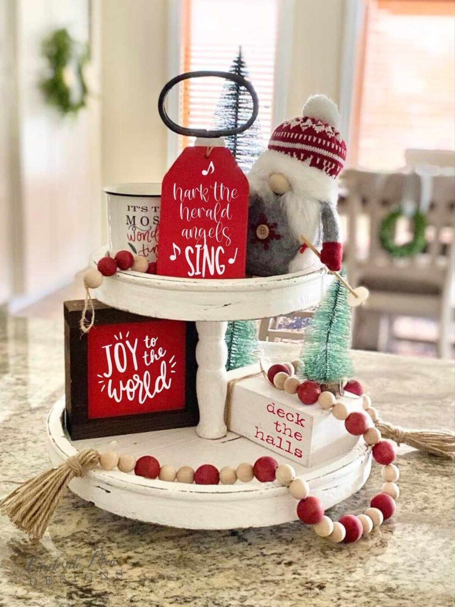
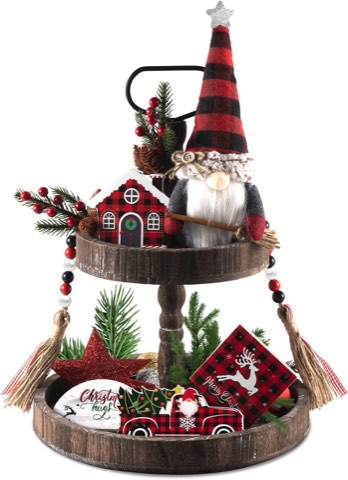
Christmas Tiered Tray Decorations Set, 13 Pcs Farmhouse Decor with Gnome and Wooden Signs
Shop on Amazon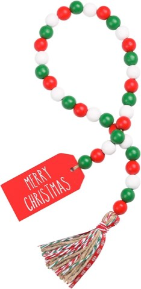
Christmas Wood Bead Garland with Tassels, Red Green White, Rustic Farmhouse
Shop on Amazon5. Stage a Peppermint Cocoa Bar on Galvanized Tiers
This one is as much a serving station as it is decor.
Three galvanized tiers hold a red Marshmallow canister, Peppermint Mocha mugs stuffed with chocolate-dipped spoons, a red Cocoa tin, and mason jars of sprinkles and red sugar.
Two peppermint candy cone trees flank the stand, and a red and white pom garland runs along the base.
A red polka dot creamer and a mug full of candy canes sit on the table at the foot of the stand.
Put the actual toppings, sprinkles, marshmallows, and candy canes, where guests can reach them. A cocoa bar nobody can use is just a display.
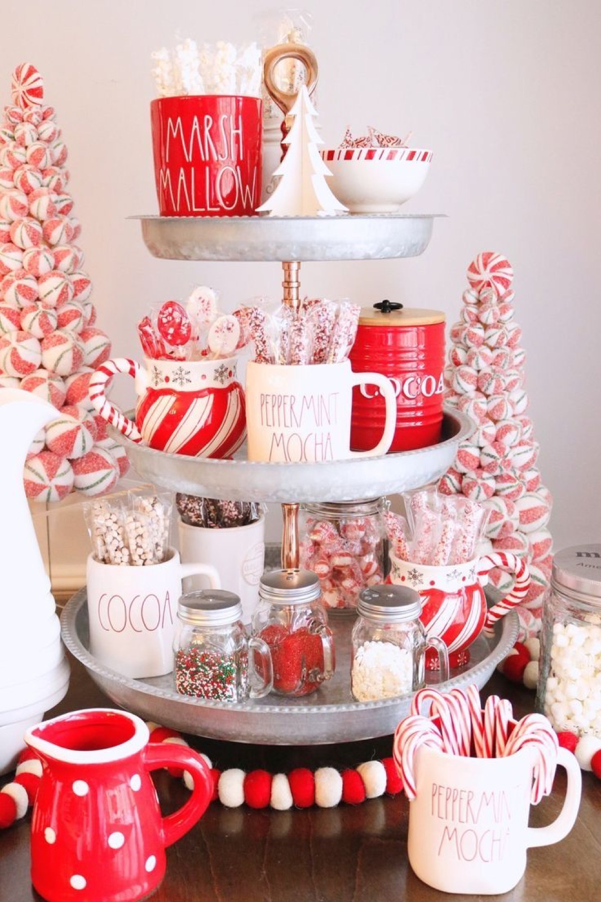


6. Monogram the Mugs and Keep the Rest Neutral
The only color on this tray comes from two plaid letter mugs and a few red jingle bells.
A white ceramic house, matte black reindeer, and wood and white stars fill three weathered gray tiers, with a buffalo check gift box tucked in the middle and fresh pine along the bottom.
A chandelier and dining chairs are just visible in the background.
Use the household's initials on the mugs. It is the one detail guests notice and remember.
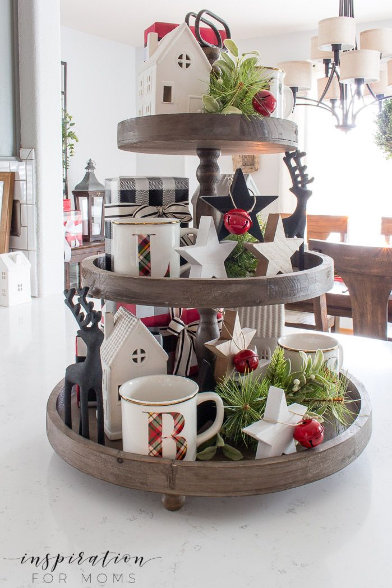
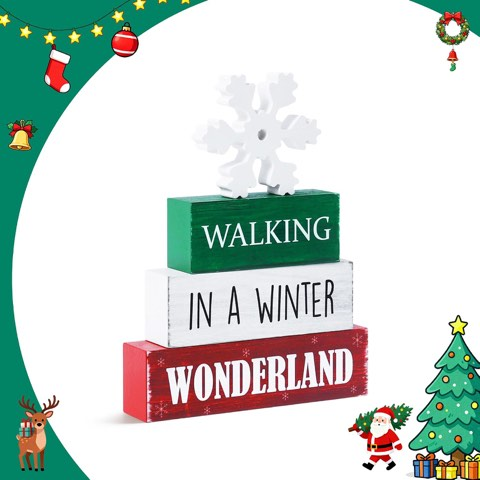
4 Pcs Christmas Wooden Tiered Tray Decor, Snowflake Signs, Winter Table Centerpiece
Shop on Amazon7. Stack Gingerbread Houses on a Galvanized Stand
Two gingerbread houses on one tray would be too much on wood. On galvanized metal they look right.
A candy cane chimney tops the house on the highest tier here, with round gingerbread cookies, a tree cookie, and a giant peppermint disc on the middle level.
The bottom tier holds a second house, a bowl of faux whipped cream, a sequined tree, and a bit of moss, all set on a wood slice.
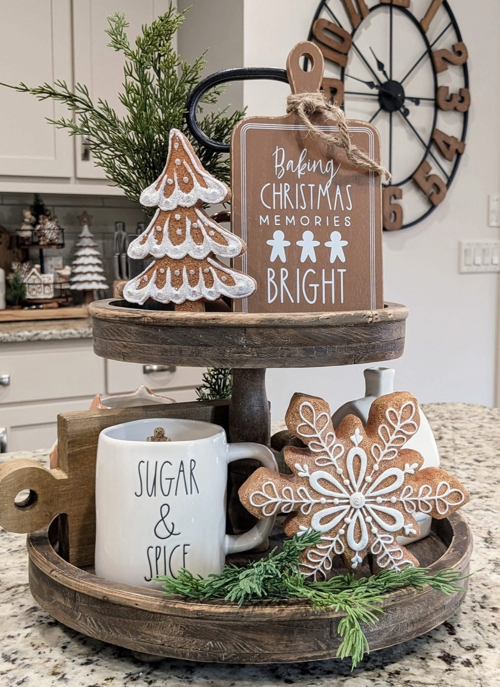
GHOSTMAGIC Gingerbread Man Christmas Wooden Table Decor, Set of 3
Shop on Amazon8. Collect Red and White Mugs Beside the Coffee Maker
There is no sign on this tray and no figurine either.
Five mismatched red and white mugs, a tiny creamer, and a stack of small plates fill a black two-tier stand set right next to the coffee pot.
Candy canes stand in one mug, cedar sprigs and pinecones fill the gaps, and a peppermint sits on the top plate.
Mix patterns but keep them all in the same two colors. Snowflakes, stripes, and florals read as a set when the palette matches.
Keep the stand where the mugs will actually get used, which is why this one lives by the coffee maker.
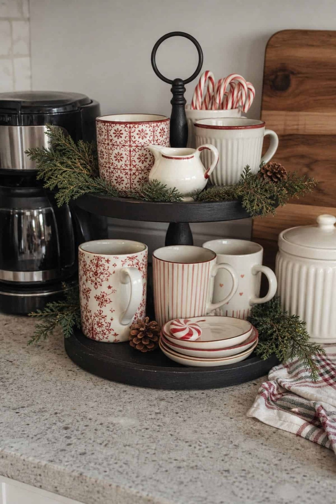
9. Light a Gold Tray for After Dark
This tray was styled to be seen at night, not noon.
Three gold metal tiers hold a plush gnome, a white Santa figure, lit ceramic houses, and bottle brush trees, with a string of fairy lights wound through every level.
A round Merry Christmas wreath sign hangs from the post, and a small Believe sign sits at the base.
Pinecones and a tiny wreath with a red bow fill the corners of the top tier.
Tuck the battery pack under the lowest tier before arranging anything else. Hiding it afterward is nearly impossible.
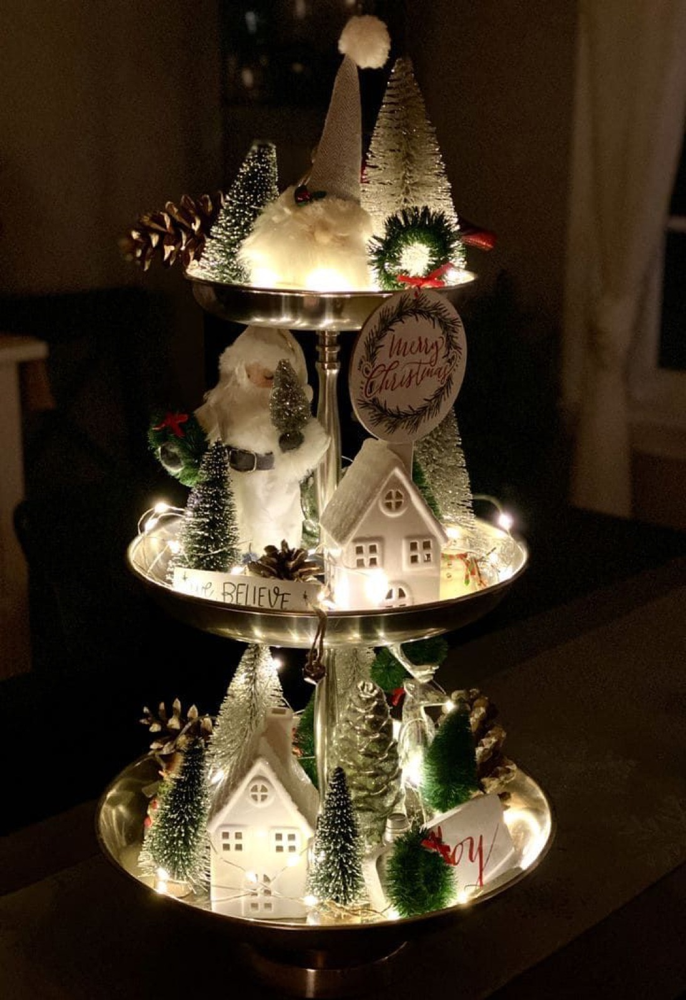

Christmas Village House Lighted Indoor Decoration, White Ceramic House with LED Light
Shop on Amazon10. Light a Gingerbread House Next to a Gingerbread Mug
A lit gingerbread house sits on the top tier of a brown wood stand here, beside a gingerbread man ornament, a smaller gingerbread figure, and pine studded with red berries.
The lower tier holds a gingerbread man mug with a candy cane, a bowl of peppermints, a gingerbread tree, and a pinecone, with a red and white striped ribbon tied around each tier.
Tie the ribbon bows on the tray edge, not on the objects. It frames each tier without covering anything.
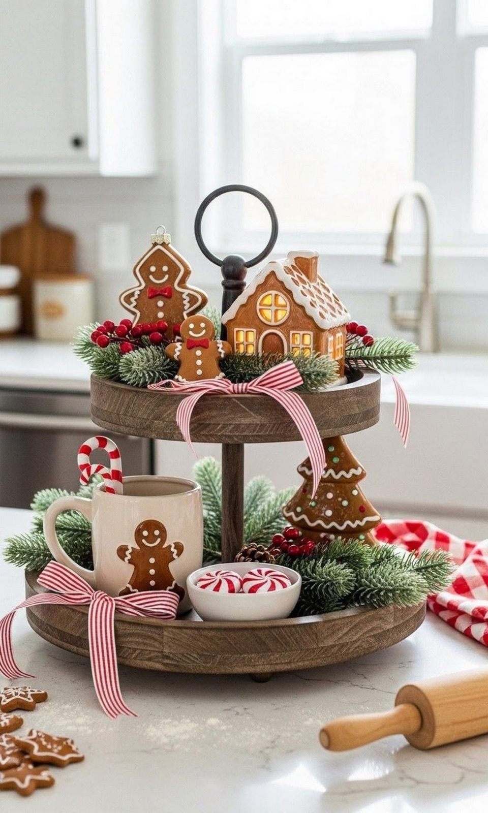
One Holiday Way 12 Inch Lighted Brown and White Gingerbread House
Shop on AmazonChristmas Wood Bead Garland with Tassels, Red Green White, Rustic Farmhouse
Shop on Amazon11. Work in Wood Slices and a Fur-Hat Gnome
Raw bark edges on the tiers give this tray a cabin feel before anything is placed on it.
A gnome in a shaggy tan fur hat stands behind a Hello Winter cutout sign on the top wood slice, with frosted pinecones, wood snowflakes, and a green wood tree alongside.
A stack of gray books reading Warm Winter Wishes sits on a mini wood sled below, flanked by more pinecones and flocked trees.
Skip the red entirely here. The browns, greens, and whites are the whole point.
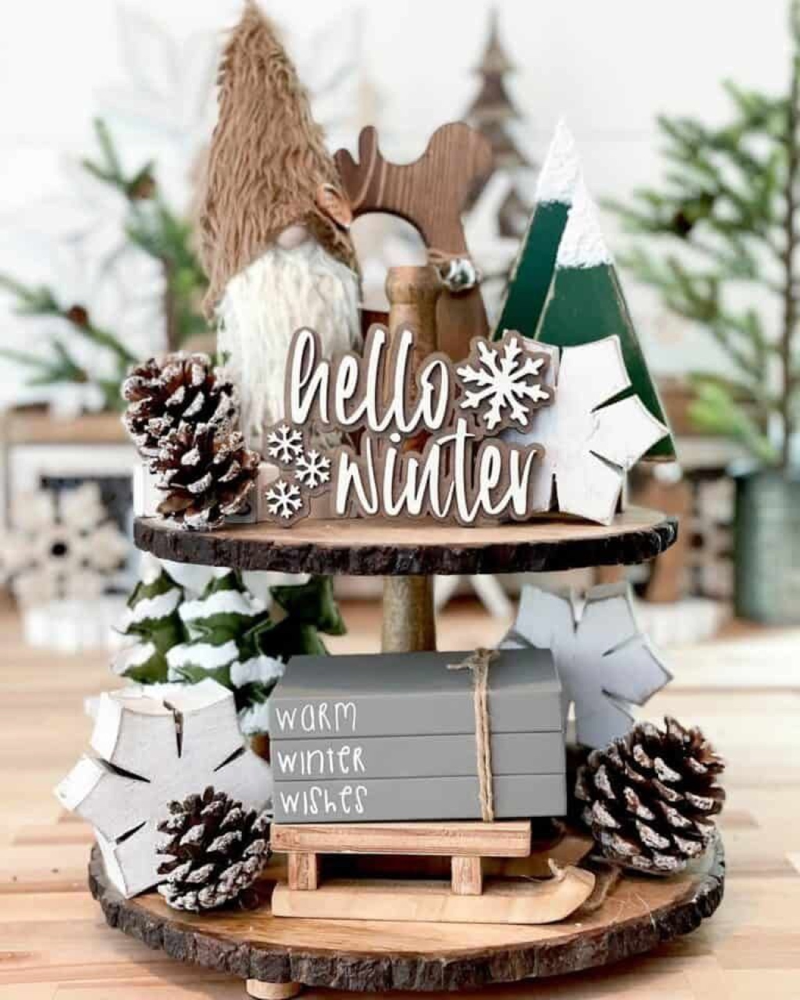
12. Set Up a Cuddle in a Cup Cocoa Station
A tray tucked in a kitchen corner can still work hard.
A Milk jar, a Cuddle in a Cup sign, and an Enjoy mug full of candy canes and wooden spoons fill the top of a gray wood two-tier stand here.
The lower tier holds a red enamel mug stuffed with cocoa pods, a Merry Christmas mug of striped straws, a plaid tree, and a few foil-wrapped chocolates.
Red berries and a sprig of pine poke out from behind the milk jar.
Keep the cocoa pods and straws loose in their mugs rather than arranged. It should look like someone just made a cup.
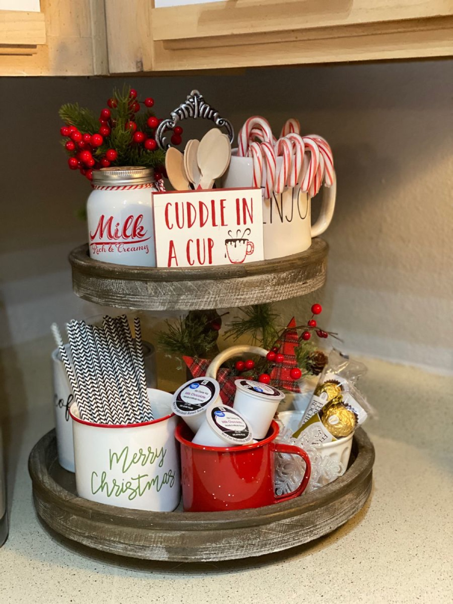
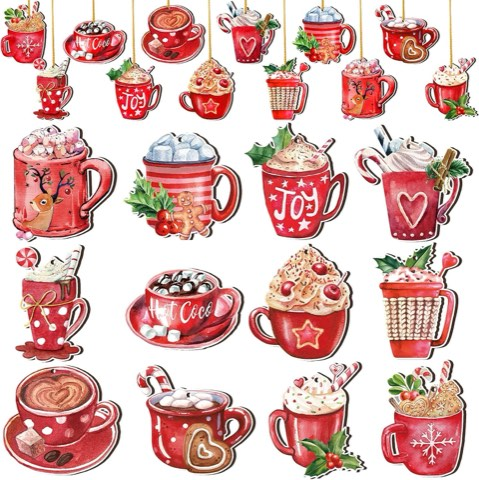
BBTO 36 Pcs Coffee Cup Christmas Ornaments, Wooden Hot Cocoa Mug Ornaments
Shop on Amazon13. Pile Buffalo Plaid Fabric Ornaments on Every Tier
Fabric-covered ornaments do not roll off a tray the way glass ones do.
Red and black plaid balls tied with twine fill all three tiers of a wood stand here, with frosted pinecones and flocked greenery tucked between them.
A galvanized metal house sits on the bottom tier, a plaid bow tops the handle, and a Santa mug waits on the plaid runner beside it.
Buy the fabric ornaments in two sizes. A tray of identical balls looks like it came out of one box.
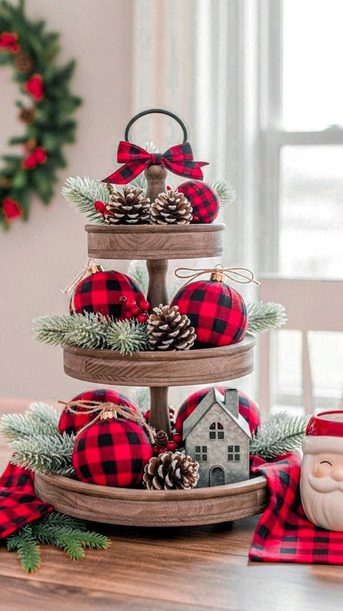
14. Light a Village of Houses at the Kitchen Sink
This tray reads best in low light, when the house windows glow.
Lit white ceramic houses in three sizes sit on three beaded wood tiers here, surrounded by bottle brush trees, pinecones, a few seashells, and a small succulent.
Place the tallest house on the lowest tier so the glow reads from across the room.
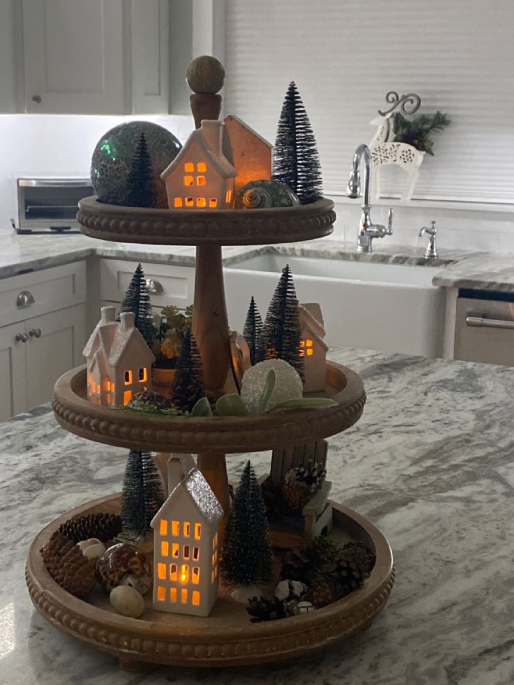
Christmas Village House Lighted Indoor Decoration, White Ceramic House with LED Light
Shop on Amazon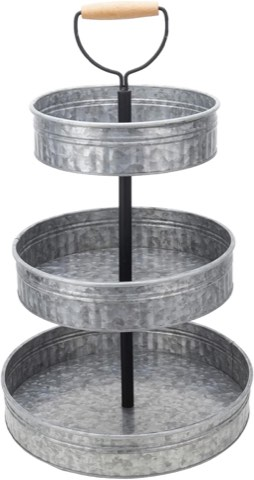
Vipush Farmhouse Metal Tiered Tray, Rustic Galvanized 3 Tier Serving Stand
Shop on Amazon15. Lean a Vintage Santa Sign Against a Tray of Teal Mugs
Teal is an unexpected choice for a Christmas tray, and it works.
A One Night Only Santa Claus retro print stands on the top of a cream stand with a black post here, beside a red tin of candy canes and a burlap-wrapped flocked tree.
Six matching teal mugs fill the middle tier, and the bottom holds a green Snow Balls tin of marshmallows, cocoa packets, and a bowl of popcorn.
Cedar sprigs and a few more candy canes in a teal berry basket finish the bottom tier.
Fill the middle tier with the mugs alone. A full tier of one object is what makes the color stand out.
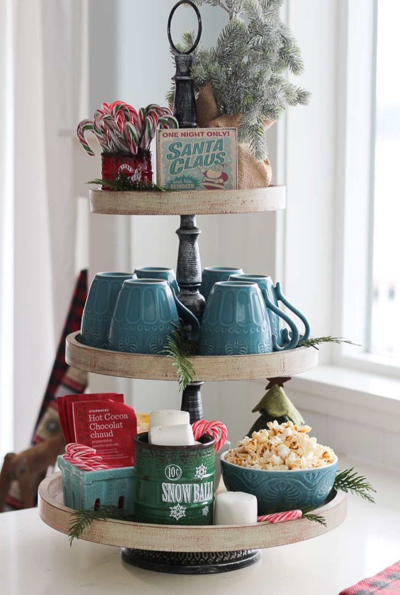
16. Build a Tis the Season Gingerbread Bakery
Nearly everything on this tray is either gingerbread or pretending to be.
A red Tis the Season mug topped with faux whipped cream and a striped straw sits on the top tier of a beaded wood stand, beside a frosted gingerbread house and a Gingerbread Cookies recipe sign tied with a gingham bow.
The lower tier holds a second house, a felt gingerbread man, a gingerbread mug of candy canes, a Merry Christmas rolling pin, snowflake cookies, and a sign reading Christmas Calories Do Not Count.
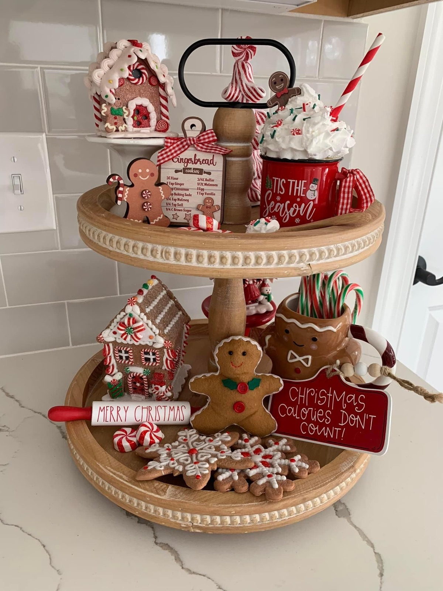
17. Skip the Tiers and Use a Round Wood Riser
A single wood riser works like a one-tier tray when counter space is tight.
Two Santa mugs stuffed with candy canes sit on a small white cake stand here, next to a white Merry and Bright canister with a red lid, a Santa bowl, and a red Coal dish of red and green candies.
A red and gray tea towel hangs on a mini drying rack behind, with pine sprigs and fairy lights threaded along the base.
Use the cake stand inside the tray to fake a second tier. It gives the height without a taller stand.
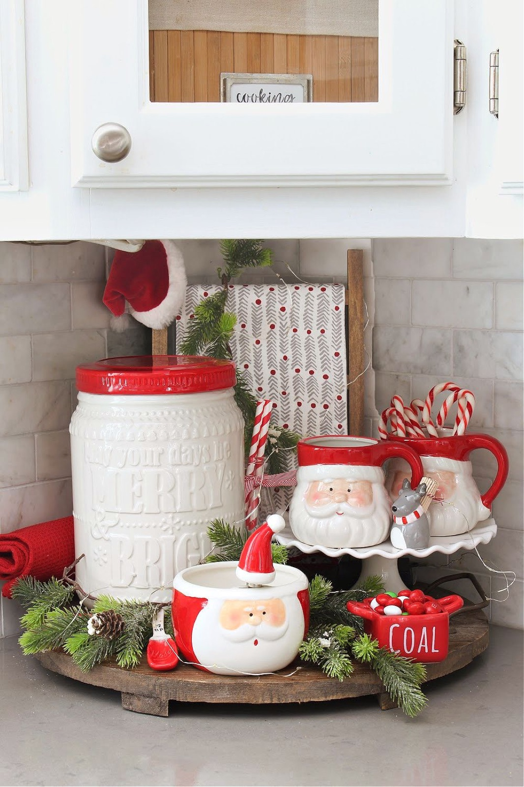

18. Dress a Black and White Tray in Buffalo Check Boots
A pair of tiny plaid boots is the piece that makes this tray.
Fur-trimmed buffalo check boots sit on the bottom tier of a weathered wood stand here, next to a Merry and Bright enamel mug, a sparkly white snowball, and a faux pine sprig.
The top tier holds a Snowplace Like Home sign, a plaid canister, a Merry Christmas cup of greenery, and a plaid ornament, with a big buffalo check bow on the handle.
A jar of black and white striped straws sits just behind the mug.
Keep any color beyond black and white to the greenery. Even one red object would break the look.
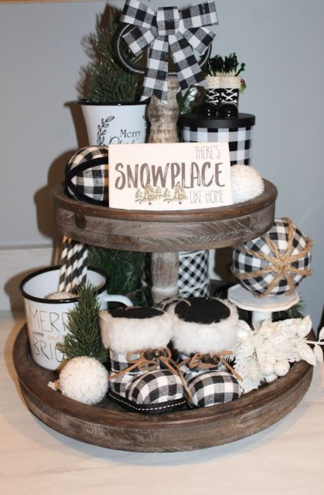
19. Put a Gingerbread Baker in a Chef Hat Front and Center
A plush gingerbread man in a chef hat and gingham scarf sits at the front of this white tray, next to a red-handled rolling pin.
Snowflake-iced star cookies, a gingerbread house covered in candy, a Sweet Bakes mug of green candy canes, and a gingerbread-print mug fill the two tiers.
Wood beads spill off the base, and a lit tree glows in the background.
Lay the rolling pin on the tray edge so it reads as a tool, not a prop.
A baking-themed tray needs one piece that looks like it was actually used.
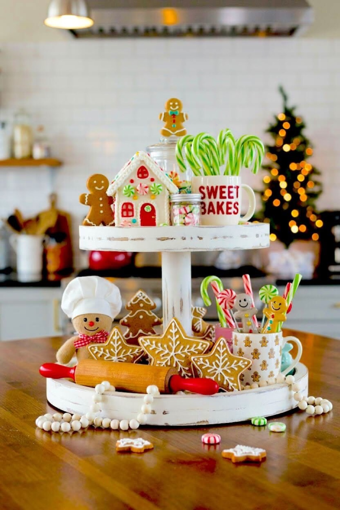
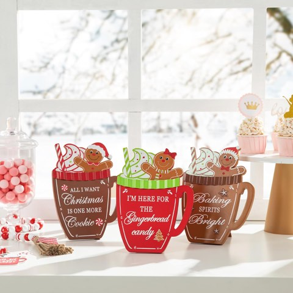
Glitzhome Christmas Wooden Table Signs, Set of 3, Gingerbread Man Mug Decor
Shop on Amazon20. Pair Wooden Snowmen with White Pitchers
Two flat wood snowman cutouts in red plaid scarves and painted top hats stand on the upper tier of a wood two-tier stand, with frosted pine, holly, and pinecones at their feet.
A third snowman, a gingerbread man, and three small white pitchers fill the bottom, with faux snow dusted across a plaid runner underneath.
Sprinkle the faux snow after everything else is placed, and keep it to the tray and the table edge.
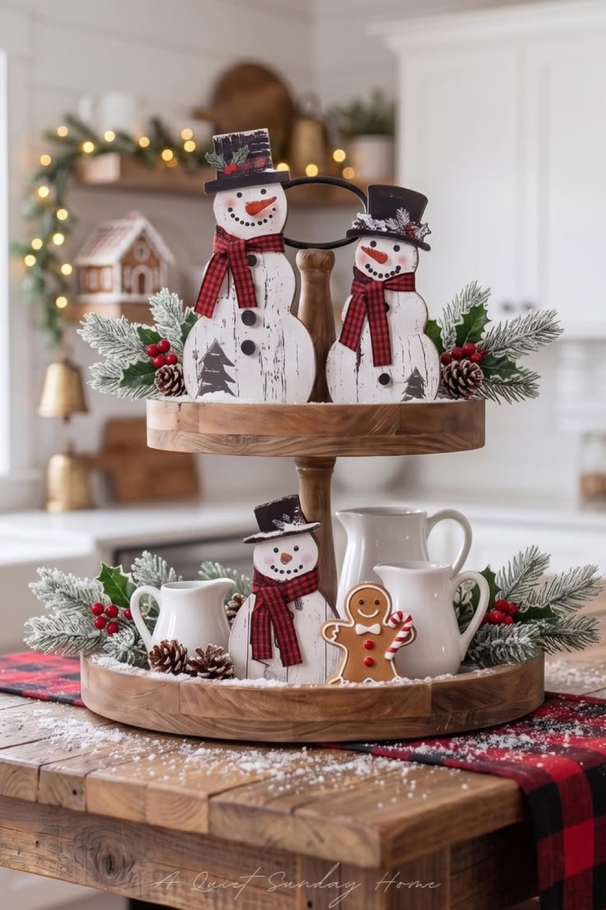
21. Hang a Candy-Stripe Believe Sign on Top
A single word in red and white stripes carries this tray from the highest tier.
A Believe cutout sign stands on a beaded wood three-tier stand here, with a Merry mug, a gnome in a plaid hat, a Winter Wonderland chalkboard, and cream bottle brush trees on the middle level.
The bottom tier holds a Merry Christmas sign with holly, a red jingle bell, a second red-rimmed mug, and a bit of pine.
A beaded edge on each tier picks up the cream in the bottle brush trees.
Put the biggest word on the top tier, not the bottom. The eye reads a tray from the top down.
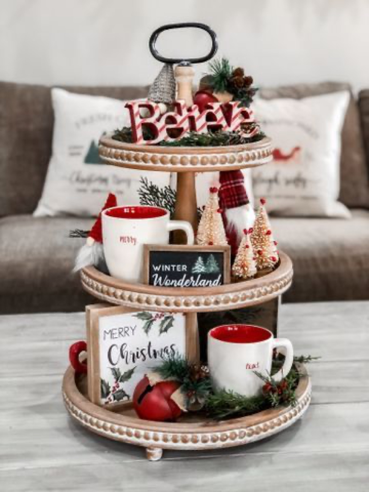
22. Give a Gingerbread Family Their Own Village
This tray tells a little story instead of just filling space.
Plush gingerbread figures in plaid bows and a chef hat sit in white pots on both tiers of a wood stand here, next to a gingerbread church, a gingerbread house, and a tall gingerbread cone tree.
Bottle brush trees, faux snow, red berries, and a gingham bow on the handle finish it, with a North Pole sign visible behind.
Face the figures toward each other, not straight out. It is what makes it read as a scene.
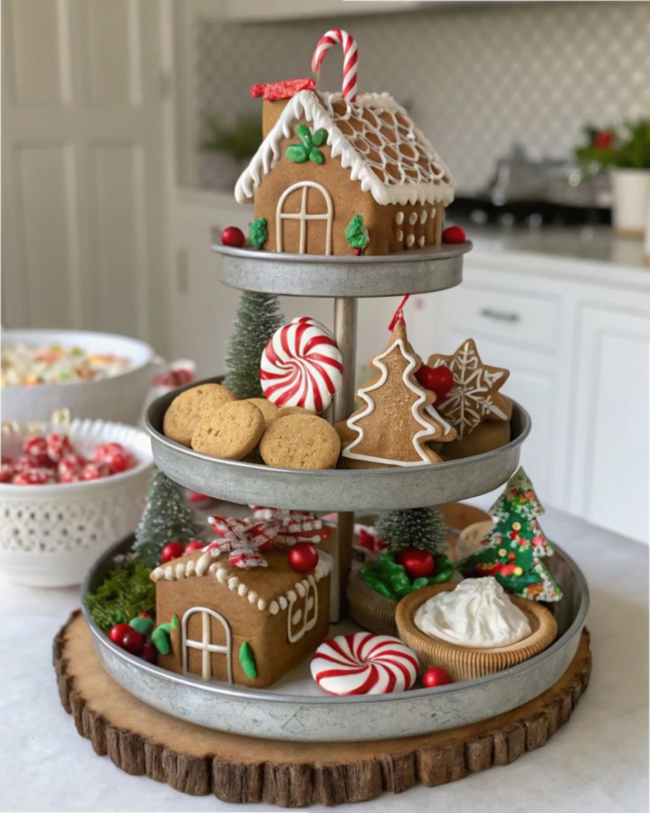
Gingerbread Man Merry Christmas Wooden Sign Centerpiece
Shop on AmazonBWFY Set of 2 Gingerbread Man Christmas Decorations with Chef Hat
Shop on Amazon23. Keep It Simple with a Red Mug and a White House
A red Joy mug and a white ceramic house sit on the top tier of a brown wood stand here, with a tall faux pine behind them and greenery with red berries around the edge.
A plaid Merry and Bright sign, a flocked bottle brush tree, and a tiny metal house fill the bottom tier.
Leave open space on each tier. A tray this sparse is easier to look at than one with every inch covered.
Christmas Village House Lighted Indoor Decoration, White Ceramic House with LED Light
Shop on AmazonSensaCasa Farmhouse Three Tiered Wood Tray Stand, Round
Shop on Amazon24. Style a White Enamel Stand in Buffalo Check Bows
Enamel tiers with a thin black rim look sharper than wood for a black and white scheme.
A Seasons Greetings sign fills the middle tier here, with a deer-sketch tag and a buffalo check bow hanging off the top, and a red berry sprig and pinecone in a small galvanized pot at the very top.
The bottom tier holds a plaid house with a boxwood wreath, an All Is Calm chalkboard with a big check bow, and a Be Bright book stack tied with ribbon.
Fresh greenery and red berries tuck under every sign so no tier reads as bare.
Use a few silver bells and a curled ribbon or two for shine. The rest should stay matte.
Christmas Decor Wooden Sign, Season's Greetings Plaque, 9.5x3.1 Inch
Shop on Amazon16 Pcs Christmas Buffalo Plaid Fabric Ball Ornaments
Shop on Amazon25. Set Up an Official North Pole Bakery
A gray tray gives all the red and white here somewhere to rest.
Gingerbread cutting-board signs, a ceramic gingerbread man, and a gumball jar sit on the top tier, with an Official North Pole Bakery sign, a gingerbread mug, and a Gingerbread rolling pin below.
Red mugs topped with faux whipped cream and striped straws sit on and around the stand, with jars tied in gingham bows and a red and natural bead garland along the base.
Let a couple of pieces sit off the tray on the table. It makes the whole thing look bigger than it is.
North Pole Bakery Hanging Sign, Festive Small Wooden Frame
Shop on AmazonGHOSTMAGIC Gingerbread Man Christmas Wooden Table Decor, Set of 3
Shop on Amazon26. Perch a Gnome in a Tall Red Hat by the Window
The gnome's hat is taller than the tray handle, which is exactly why it works.
He sits on the top tier of a chippy white stand here, next to a Santa mug holding a tiny tree, a red truck, and a Life Happens Coffee Helps sign.
A red truck Merry Christmas mug, a Sugar jar, a red spoon, and a jar tied with buffalo check ribbon fill the bottom tier, with a Farm Fresh Christmas Trees sign propped beside the stand.
Farm Fresh Christmas Trees Wall Decor Sign, Wood Framed, 12x12 Inch
Shop on AmazonMini Christmas Tree Ornaments, Metallic Red Truck with Tree, Set of 4
Shop on Amazon27. Spell It Out with a Snow Sign and Sweater Weather
Wood word signs do most of the talking on this white tray.
A tall vertical SNOW sign and a snowflake block stand on the top tier, with a Let It Snow tag hanging from the handle and a garland of wood snowflakes draped along the tier edge.
A Sweater Weather sign sits between two mug cutouts reading Yum on the bottom, with bottle brush trees and lit greenery tucked behind.
The whole stand sits against a whitewashed brick wall, which keeps all that white from disappearing.
Mix lettered signs with cutout shapes rather than using all one kind. It keeps the tray from reading as a wall of text.
Primitives by Kathy Block Sign, Sweater Weather
Shop on AmazonSweater Weather Wooden Sign, Farmhouse Rustic, 4x16 Inch
Shop on Amazon28. Hang a Hot Cocoa Sign Above the Tray
Here the wall above the tray gets decorated too.
A Hot Cocoa sign hangs on a rail with red mugs beneath it, right above a wood two-tier stand holding stacked Santa mugs, a gingerbread house canister, a wooden spoon jar, and a gingerbread tree.
A gingerbread-print mug, a gingerbread rolling pin, a tiny white house, and a second Santa mug fill the bottom, with a gingerbread apron hanging alongside.
Hang the sign at eye level, not just above the tray. It should read from the doorway.
Hot Cocoa Christmas Wood Sign, Rustic Hanging Plaque, 8x10 Inch
Shop on AmazonBWFY Set of 2 Gingerbread Man Christmas Decorations with Chef Hat
Shop on Amazon29. Park a Red Truck on the Top Tier
A red pickup with a tree in the bed is the one piece on this tray that every guest reaches for.
It sits on the top of a wood stand here, beside a red flocked reindeer, a dark green Merry Little Christmas mug, a Ho Ho Ho tag, and a pot of pinecones with a tall pine sprig.
The bottom holds a Hot Cocoa Served Here book stack, a red enamel mug printed with trees, a Joy ornament sign, a green cone tree, and a strand of wood beads with a jute tassel.
Mini Christmas Tree Ornaments, Metallic Red Truck with Tree, Set of 4
Shop on AmazonLight & Pro Farmhouse Rustic Wooden Bead Garland with Jute Tassels, 58 Inch
Shop on Amazon30. Raid the Pantry for a Gingerbread Tray
Not everything here was bought for decorating.
A real pepper tin stuffed with greenery and a gingerbread man sits on the top tier of a natural wood stand, next to a Tidings of Comfort and Joy house sign and a green mug.
Gingerbread cutouts, a We Go Together Like Cookies and Christmas sign, peppermint ribbon trees, a gingerbread house, a snowflake mug of marshmallows, and a Falala rolling pin fill the lower tiers.
The tray sits in a plain corner, which is all the backdrop a tray this busy needs.
A spice tin or flour canister on a baking tray looks like it belongs there. Use the real thing.
Rustic Good Tidings of Comfort and Joy Farmhouse Wood Sign, 9.5x3.1 Inch
Shop on AmazonTis the Season Santa Mug, Festive Ceramic Christmas Cup, 11 oz
Shop on Amazon31. Spell Merry in Tree Blocks on a Sage Tray
Green does the work red usually does on this one.
Five wood tree blocks spelling MERRY line the front of the top tier here, beside a green Believe mug stuffed with pine and berries and a green bead garland with jute tassels.
The bottom tier holds a sage Merry mug, a plush snowman, white and green ceramic trees, and two white jingle bells, all on a white two-tier stand with a wood post.
Pick three shades of green and repeat each one at least twice. That is what makes a single-color tray look intentional.
Rae Dunn BELIEVE Coffee Mug, Allside Green, 16 oz
Shop on Amazon
32. Top a Tray with a Knitted Santa and Star Cookies
A tiny knit Santa on the highest tier gives this tray a face.
He sits among candy canes, red berries, and a star cookie on a cream speckled three-tier stand, with red snowflake ornaments spilling from a hexagon mug on the middle tier.
Candy canes stand in a glass on the bottom, next to a striped candle, a striped mug of ribbon candies, and a flocked bottle brush tree.
Walker's Mini Festive Shortbread Cookies, Star-Shaped Christmas Cookies, Pack of 6
Shop on AmazonAcrylic Candy Cane and Peppermint Gems, 91 Pcs, Christmas Vase and Tray Filler
Shop on Amazon33. Keep a Snowman Tray Entirely White
This is as close to monochrome as a Christmas tray gets.
A chippy white two-tier stand holds a snowman figurine with a Let It Snow sign, a Handmade Snow Balls tag, and a white wood snowflake on top, with a Baby It Is Cold Outside sign and a snowman block below.
A rusty jingle bell and a white bead garland with jute tassels add the only texture, on a whitewashed brick surface.
A tiny bottle brush tree behind the snowman is the only green on the whole stand.
Let the bead garland trail off the tray and across the table. It softens the hard edges of the stand.
Large Wooden Snowman Cutout, 12 Inch, Unfinished Winter Decor
Shop on AmazonThere's Snow Place Like Home Hanging Door Sign, Wooden Wall Art
Shop on Amazon34. Lean a Baking Christmas Memories Sign on a Gingerbread Tray
Gingerbread does not have to be edible to work on a tray.
A gingerbread tree and a cutting-board sign reading Baking Christmas Memories Bright stand on the top tier of a dark wood stand here, with faux cedar behind them.
A Sugar and Spice mug and an oversized iced gingerbread snowflake fill the bottom, with a wood clock on the wall behind.
Use one large decorative cookie rather than several small ones. A big snowflake reads from across the room.
Cookies Make Everything Better Wooden Box Sign, Christmas Baking Decor
Shop on AmazonRae Dunn Christmas Mug, Sugar and Spice, Light Pink Iridescent, 14 oz
Shop on Amazon35. Fill Both Tiers with Foil-Wrapped Chocolates
This is the simplest tray on the list, and the first one guests empty.
Red, green, and gold foil-wrapped chocolates fill both tiers of a dark two-tier stand here, with a few candy canes tucked in, set in front of a garlanded fireplace.
Overfill the tiers until a few pieces look about to fall. A half-empty candy tray reads as leftovers.
Lindt LINDOR Milk Chocolate Candy Truffles, 60 Count Box
Shop on AmazonLindt LINDOR Dark Chocolate Candy Truffles, 60 Count Box
Shop on Amazon36. Set a Snowman Mug Beside a Hot Cocoa Chalkboard
Three signs on one tray can work when each one says something different.
A Coffee sign stands at the top of a white two-tier here, above a snowman mug in a top hat, a red Christmas mug, and a wood block of candy canes.
A Hot Cocoa Bar chalkboard, a Merry block, a gingerbread cookie, and a jar of marshmallows tied with gingham fill the bottom.
Life Happens Coffee Helps Rustic Wooden Tabletop Sign, 5x8 Inch
Shop on AmazonThe Home Champs Cute Snowman Christmas Mug, Blue Hat and Scarf, 11 oz
Shop on Amazon37. Mix Felt Trees with White Santa Mugs
Felt trees in the background turn a tray into a little stage.
Two white Santa mugs with bottle brush trees in them sit on the top tier of a dark wood stand here, with white berry branches and cedar behind.
The bottom tier holds white deer figurines, a Fresh Cut Trees 25 Cents sign, a Holiday Cheer candle, a wood snowflake, a small lantern, and two brass bells, all on a crochet doily.
Stand the felt trees behind the tray, not on it. They give the depth a flat wall never would.
Everything on the tray itself can stay white, green, and wood.
Farm Fresh Christmas Tree Door Sign, 12 Inch Round Rustic Farmhouse
Shop on Amazon38. Pile On Cotton Snow for a Winter Vibes Tray
Cotton batting is the cheapest snow there is, and it photographs well.
A dark green wood house topped with cotton snow and a Snow cutout fill the top tier of a white three-tier stand here, with wood cone trees alongside.
A Winter Vibes sign and a green and natural bead garland fill the middle, and a Farm Fresh Christmas Trees sign, birch logs, flocked trees, and more snow fill the bottom.
Pull the cotton apart so it looks drifted, not placed. Flat squares of batting read as packaging.
4 Pcs Christmas Wooden Tiered Tray Decor, Snowflake Signs, Winter Table Centerpiece
Shop on AmazonLight & Pro Farmhouse Rustic Wooden Bead Garland with Jute Tassels, 58 Inch
Shop on Amazon39. Fill a Black-Rimmed Tray with an Oh Holy Night Sign
This tray spreads past its own edges onto the table.
An Oh Holy Night sign and a red ball ornament sit on the top tier of a wood stand with a black metal frame here, with a wood bead garland looped around the handle.
A plaid pickup truck, a Merry Christmas tag, and more beads fill the lower tier, with a buffalo check gift box, a snowman figurine, and a flocked tree spilling onto a red plaid runner beside it.
16 Pcs Christmas Buffalo Plaid Fabric Ball Ornaments
Shop on AmazonBuffalo Plaid Christmas Tree Truck Snow House Porcelain Ornament
Shop on Amazon40. Collect Vintage-Style Snowmen on a Pink-Wash Tray
The snowmen here look like old-fashioned candy containers, which is the whole charm.
A snowman cookie jar in a red hat sits on the top tier of a whitewashed wood stand here, beside two tiny snowmen and a Snowplace Like Home sign propped on a wood snowflake.
A Snow Day canister, a round snowman mug with a candy cane handle, and a third small snowman fill the bottom tier, with a sprig of pine behind.
Group the snowmen by size on each tier. Tallest on top, smallest on the bottom, so nothing hides behind the post.
Renditions Gallery Snowplace Like Home Canvas Wall Art, 12x18 Inch
Shop on AmazonRae Dunn LET IT SNOW Ceramic Christmas Canister
Shop on Amazon41. Line a Mirrored Tray in Peppermint Lollipops
A jeweled rim and a mirrored base make this the shiniest tray in the roundup.
A stack of peppermint lollipops stands on the top tier here, beside a marshmallow-face mug, a blue fur-hat gnome, and a Holly Jolly canister.
A red Cup of Cheer jar, a Cream pitcher of marshmallows, a Sugar jar, a smiling marshmallow mug, and a red Merry Christmas mug fill the lower tiers, with a Santa boot holder of coffee pods on the counter.
Add one piece of fur or felt to a glittery tray. The gnome keeps all that sparkle from feeling cold.
Holly Jolly Christmas Wooden Sign, 12.75x11.75 Inch
Shop on AmazonMycts Marshmallow Mugs, Set of 4, Hot Chocolate Cocoa Mugs
Shop on Amazon42. Fill a Jar with Marshmallows for a Cocoa Bar Tray
A jar of marshmallows is the one thing every cocoa bar tray needs.
This one sits on the bottom tier of a white stand here, next to a Hot Cocoa Bar chalkboard and a snowman salt shaker, with a snowflake mug, a Coffee chalkboard, and a wood block of candy canes above.
Use a jar with a metal lid rather than a glass one. The shine is a small thing that reads as finished.
Warm Up at the Hot Cocoa Bar Wooden Hanging Plaque, 10x5 Inch
Shop on AmazonBBTO 36 Pcs Coffee Cup Christmas Ornaments, Wooden Hot Cocoa Mug Ornaments
Shop on Amazon43. Set a Santa Tray on the Coffee Table Instead
A tiered tray does not have to live in the kitchen.
The same knit Santa, star cookies, and red snowflake ornaments from earlier fill a cream three-tier stand here, set on a coffee table in front of a white sofa with a red knit pillow.
Candles glow on the mantel behind, and a lit tree fills the corner.
Put a tray where people sit, not where they pass through. It gets looked at far more on a coffee table than a counter.
Keep the candle on the tray unlit if the tray sits near pillows.
Lindt LINDOR Milk Chocolate Candy Truffles, 60 Count Box
Shop on Amazon44. Finish with a Tray of Nothing But Ornaments
The last tray on the list has no mugs, no signs, and no figurines at all.
Red matte, silver, and glitter ball ornaments fill three rustic wood tiers here, nested in fresh pine with red berries and pinecones, with a red plaid bow on top.
Mix at least three finishes, matte, shiny, and glitter, in the same two colors. One finish alone looks flat.
100 Pack Red and Gold Christmas Ball Ornaments, Hand-Painted Shatterproof
Shop on AmazonChristmas Plaid Wreath Bow, Red and Grey Tartan Farmhouse Ribbon
Shop on AmazonPick One Theme and Build Out
Forty-four trays is a lot to look at, but you only need one good idea to make yours feel finished.
Pick the theme first, then choose the tiers around it.
If you are starting from scratch, a tray, a mug or a mini tree for height, and a garland for the base are all you really need.
Everything else is layering on top of that.
A tray with one strong focal piece, a gingerbread house, a Santa mug, a reindeer sign, almost always looks more intentional than one with ten small objects competing for attention.
Whatever theme you land on, this is one of the easiest Christmas projects to redo every year, since pieces swap in and out without starting over.